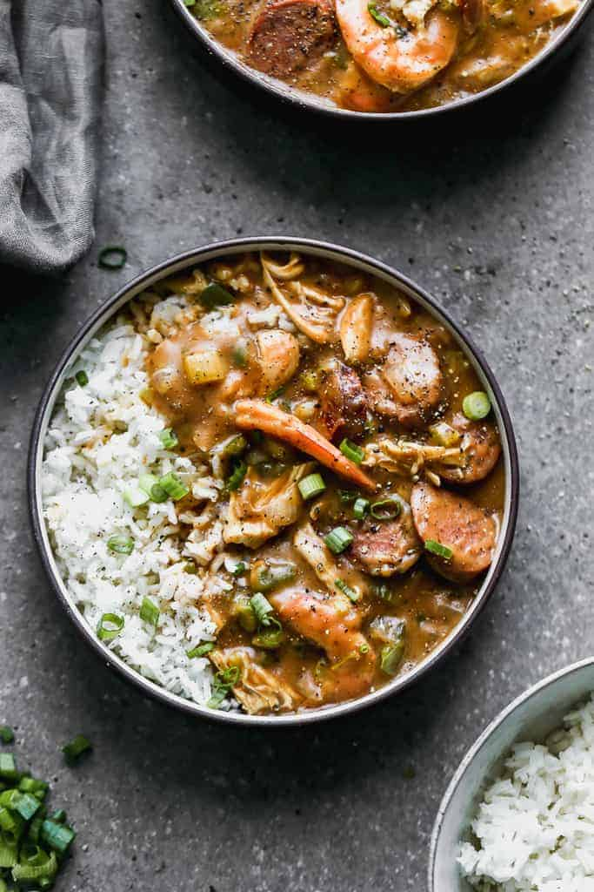

Gumbo

Description
Gumbo is one of the most famous dishes to result from Louisiana's shared Creole-Cajun heritage.
Gumbo falls somewhere between a thick stew and a hearty soup and can contain ingredients such as
chicken, sausage, ham, seafood, okra, tomatoes, and greens.
As varied as the recipes can be, there are a few ingredients that all gumbos have in common:
homemade stock; the "holy trinity" of celery, onions, and green peppers; and roux.
Ingredients
- 1 medium green bell pepper
- 1 medium yellow onion
- 3 stalks celery
- 6 cloves garlic
- 1/2 bunch fresh parsley (optional)
- 2 to 3 tablespoons salt-free Cajun seasoning (see Recipe Notes), divided
- 2 teaspoons dried thyme
- 2 bay leaves
- 1/2 teaspoon cayenne pepper, plus more as needed
- 1 pound boneless, skinless chicken thighs, or 1 rotisserie chicken
- 1 1/2 teaspoons kosher salt, plus more as needed
- 1 1/2 teaspoons freshly ground black pepper
- 14 ounces andouille sausage
- 1/4 cup plus 1 tablespoon neutral cooking oil, such as canola or vegetable, divided
- 6 cups (48 ounces) low-sodium chicken broth, at room temperature
- 2 teaspoons filé powder (optional, see notes below)
- 4 tablespoons (1/2 stick) unsalted butter
- 1/2 cup all-purpose flour
For serving:
- 1/2 bunch medium scallions
- 3 cups cooked white rice
- Crystal or Tabasco hot sauce
Steps
- Make the roux. in a large pot, combine flour and oil and cook, stirring
constantly on medium low heat. You have to be careful to stir it constantly,
on medium low heat, so that you don’t burn it. It’s easy, but takes patience. The darker the roux,
the richer the flavor!
-
Chop the veggies. When you’re ready to make your gumbo, start by chopping celery, onions, bell pepper,
parsley. I love the freshness from the green bell pepper, onion, celery and parsley. You can also add
okra, if you want. Add it at the same time as the other vegetables.
-
Brown the sausage. Spread the sausage in a single layer on a hot, large skillet. Once browned, flip
each one over individually, to make sure they all get nice and brown on both sides.
-
Add to large pot. Add chicken broth veggies, parsley, and roux to the pot and stir well. (Skim off any
foam that may rise to the top of the pot.) Stir in cajun seasoning, to taste.
-
Add meat. Add chicken, sausage, and shrimp and taste. Add more seasonings to your liking–salt, pepper,
chicken bullion paste, garlic, more Joe’s stuff or more chicken broth–until you reach the perfect flavor.
-
Serve warm over hot cooked rice. This recipe tastes even better the next day as the flavors have a chance
to blend. If you’re really wanting to go all out, serve it with a side of homemade potato salad!